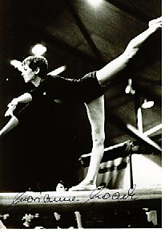

Marianne Noack (GDR)
1968 Olympic Team Bronze Medalist

Medal Total
Olympic Games: 1
Bronze
World Championships: 1 Silver
Competition Results
1966
Jr. Friendship Tournament (Druzhba): 1st Team, 2nd AA, 2nd UB, 2nd B
1967
GDR Championships: 4th AA, 5th V, 5th B
GDR-POL Dual Meet: 1st Team, 2nd AA
GDR-ROM Dual Meet: 1st Team, 3rd AA
GDR-USSR Dual Meet: 1st Team, 7th AA
Pre-Olympics: 4th AA, 3rd B
SWE-GDR Dual Meet: 1st Team, 2nd AA
1968
DTV Cup: 4th AA
GDR Championships: 3rd AA, 3rd UB, 4th B, 4th FX, 6th V
GDR-BUL Dual Meet: 1st Team, 3rd AA
GDR-FRA Dual Meet: 1st Team, 3rd AA
Olympic Games: 3rd Team, 27th AA
SWE-GDR Dual Meet: 1st Team, 3rd AA
1969
DTV Cup: 3rd AA
GDR Championships: 3rd AA, 3rd V, 3rd UB, 2nd B
GDR-JPN Dual Meet: 1st Team 2nd V, 2nd UB, 2nd B
Pre-World Championships: 4th AA
USSR-GDR-ROM: 1st Team, 5th AA, 4th V, 4th UB, 4th B
1970
GDR Championships: 3rd AA, 2nd B, 3rd UB, 5th V
GDR-USSR Dual Meet: 2nd Team, 4th AA
World Championships: 2nd Team, 11th AA
1971
DTV Cup: 2nd AA
GDR Championships: 4th UB
GDR-SWE Dual Meet: 1st Team, 2nd AA
USSR-GDR Dual Meet: 2nd Team, 7th AA
1972
DTV Cup: 4th AA
GDR Championships: 4th AA, 3rd B, 4th UB
NOR-GDR Dual Meet: 1st Team, 2nd AA
USSR-GDR Dual Meet: 2nd Team, 7th AA
This page was created on September
12, 2004 and was last updated on October 01, 2021.
© Gymn Forum